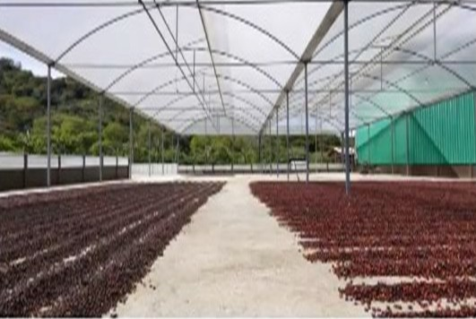
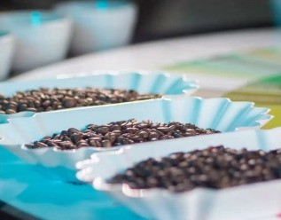

Producir, procesar y comercializar cafés de calidad mediante métodos sostenibles e innovadores.
Visión
Ser una empresa líder en el procesamiento, la comercialización y la exportación de cafés especiales a nivel mundial.

Café Solís & Cordero
La empresa nació en 2018 como una iniciativa de la familia Solís Cordero para comercializar café de la Zona de Los Santos de forma justa y estable.

Sagaz Coffee
En el área de tostado preparamos café para el mercado nacional. Sagaz Coffee reúne cafés de Santa María de Dota con perfiles dulces, cítricos y frutales.